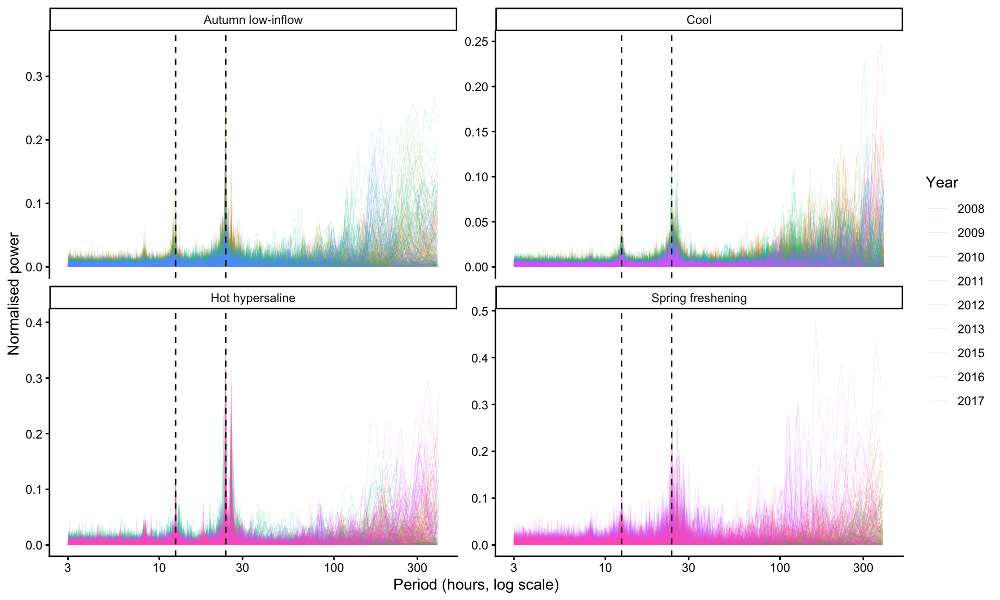
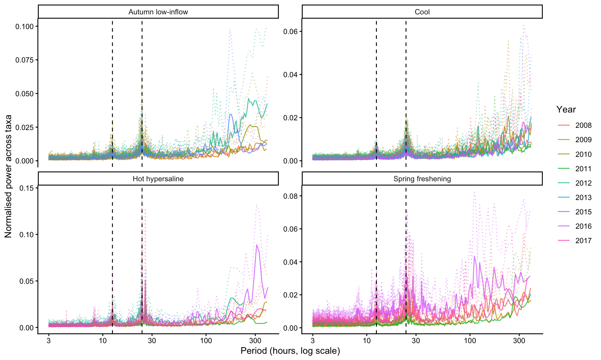
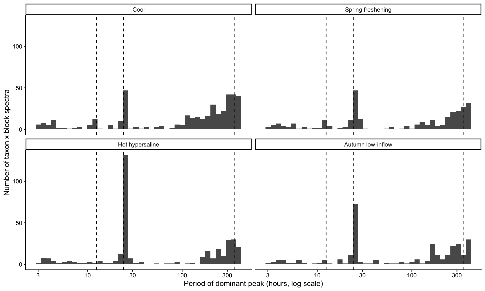
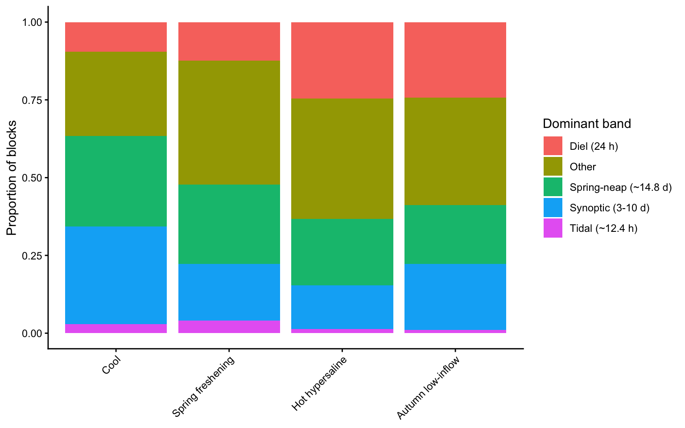
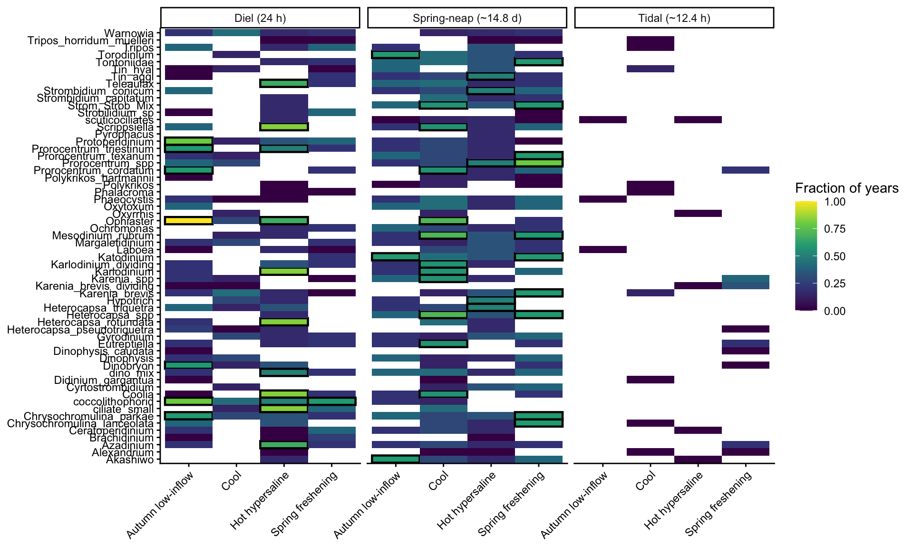

Code
library(tidyverse)
library(lomb)Run after 02-overview-seasonality-stats.qmd.
lomb provides the Lomb-Scargle periodogram, which handles the uneven hourly sampling and gaps in IFCB records.
Peaks are labelled by the band they fall in. Edit the limits to add cycles of interest.
Runs a periodogram for one block and returns the fit object.
Assigns a peak period to a target band.
assign_band <- function(period_h) {
case_when(
period_h >= band_table$lo[1] & period_h <= band_table$hi[1] ~ band_table$BAND[1],
period_h >= band_table$lo[2] & period_h <= band_table$hi[2] ~ band_table$BAND[2],
period_h >= band_table$lo[3] & period_h <= band_table$hi[3] ~ band_table$BAND[3],
TRUE ~ "Other"
)
}Defines a function that fits one periodogram per block for each CELL_ID supplied.
run_lomb_fits <- function(cell_ids) {
block_data |>
filter(CELL_ID %in% cell_ids) |>
select(CELL_ID, SEASON, BLOCK_ID, BLOCK_YEAR, hrs, RESID) |> # drop columns that would split the groups
group_by(CELL_ID, SEASON, BLOCK_ID, BLOCK_YEAR) |>
filter(sd(RESID) > 0) |> # flat series cannot be scanned
filter(sum(is.finite(RESID)) >= min_obs_fit) |> # too few points cannot be scanned
nest(series = c(hrs, RESID)) |>
ungroup() |>
mutate(fit = map(series, ~ fit_lomb(.x$hrs, .x$RESID, min_period_h, max_period_h, ofac)))
}Runs periodicity check on CELL_IDs set in the params chunk.
meso_3 <- c("Teleaulax", "Mesodinium_rubrum", "Dinophysis")
all_cell_ids <- c("Teleaulax","Akashiwo","Alexandrium","Azadinium","Brachidinium","Ceratoperidinium","Coolia","dino_mix","Dinophysis","Dinophysis_caudata","Gyrodinium","Heterocapsa_pseudotriquetra","Heterocapsa_rotundata","Heterocapsa_spp","Heterocapsa_triquetra","Karenia_brevis","Karenia_brevis_dividing","Karenia_spp","Karlodinium","Karlodinium_dividing","Katodinium","Margalefidinium","Oxyrrhis","Oxytoxum","Phalacroma","Polykrikos","Polykrikos_hartmannii","Prorocentrum_cordatum","Prorocentrum_spp","Prorocentrum_texanum","Prorocentrum_triestinum","Protoperidinium","Pyrophacus","Scrippsiella","Torodinium","Tripos","Tripos_horridum_muelleri","Warnowia","coccolithophorid","Chrysochromulina_lanceolata","Chrysochromulina_parkae","Ophiaster","Phaeocystis","Dinobryon","Ochromonas","Didinium_gargantua","Mesodinium_rubrum","scuticociliates","Cyrtostrombidium","Laboea","Strobilidium_sp","Strom_Strob_Mix","Strombidium_capitatum","Strombidium_conicum","Tontoniidae","Hypotrich","Tin_aggl","Tin_hyal","ciliate_small","Eutreptiella")[1] 1372Rows: 1,372
Columns: 6
$ CELL_ID <chr> "Akashiwo", "Alexandrium", "Azadinium", "Brachidinium", "Ce…
$ SEASON <chr> "Cool", "Cool", "Cool", "Cool", "Cool", "Cool", "Cool", "Co…
$ BLOCK_ID <int> 0, 0, 0, 0, 0, 0, 0, 0, 0, 0, 0, 0, 0, 0, 0, 0, 0, 0, 0, 0,…
$ BLOCK_YEAR <int> 2008, 2008, 2008, 2008, 2008, 2008, 2008, 2008, 2008, 2008,…
$ series <list> [<tbl_df[1196 x 2]>], [<tbl_df[1196 x 2]>], [<tbl_df[1196 …
$ fit <list> [standard, 3.000282, 3.001129, 3.001976, 3.002823, 3.00367…lomb fits reports a periodgram for each of the cell IDs input.
scanned: periods tested (in # of hours)power: normalized power at each of those periods. Peaks mark candidate cycles, and higher power means more of the block’s variance sits at that periodpeak: highest power in th spectrump.value: probability that the peak would be this high by chance.sig.level: assigned power needed for significant at alpha given to lsp()lomb_results <- lomb_fits |>
mutate(
PEAK_PERIOD_H = map_dbl(fit, ~ .x$scanned[which.max(.x$power)]), # period of the highest peak
PEAK_POWER = map_dbl(fit, ~ .x$peak),
P_VALUE = map_dbl(fit, ~ .x$p.value)
) |>
select(-series, -fit) |>
mutate(BAND = assign_band(PEAK_PERIOD_H)) # multiple-testing correction is done in 03, after all CELL_IDs are combined
# head(lomb_results)
unique(lomb_results$BAND)[1] "Spring-neap (~14.8 d)" "Tidal (~12.4 h)" "Other"
[4] "Diel (24 h)" Explanation: For each row (cell ID) we hav eoutputs for:
PEAK_PERIOD_H: the period of the highest peak, in hoursPEAK_POWER: the height of that peak.P_VALUE: the raw p-value of that peak.BAND: which of your target cycles the peak falls in, or “Other”.# A tibble: 199 × 3
CELL_ID BAND n
<chr> <chr> <int>
1 Akashiwo Diel (24 h) 1
2 Akashiwo Other 13
3 Akashiwo Spring-neap (~14.8 d) 8
4 Akashiwo Tidal (~12.4 h) 1
5 Alexandrium Diel (24 h) 2
6 Alexandrium Other 14
7 Alexandrium Spring-neap (~14.8 d) 3
8 Alexandrium Tidal (~12.4 h) 2
9 Azadinium Diel (24 h) 6
10 Azadinium Other 11
# ℹ 189 more rows[1] "Spring-neap (~14.8 d)" "Tidal (~12.4 h)" "Other"
[4] "Diel (24 h)"
Diel (24 h) Other Spring-neap (~14.8 d)
237 772 331
Tidal (~12.4 h)
32 Writes one file per CELL_ID, so rerunning a CELL_ID only overwrites its own results.
One thin line per taxon x block, plus a median/upper-quartile summary per block.
spectra_taxa <- NULL # set to one or more CELL_IDs to subset; NULL = all taxa
spectra_plot <- lomb_fits |>
filter(is.null(spectra_taxa) | CELL_ID %in% spectra_taxa) |>
mutate(spec = map(fit, ~ tibble(period_h = .x$scanned, power = .x$power))) |>
select(CELL_ID, SEASON, BLOCK_ID, BLOCK_YEAR, spec) |>
unnest(spec)
head(spectra_plot)# A tibble: 6 × 6
CELL_ID SEASON BLOCK_ID BLOCK_YEAR period_h power
<chr> <chr> <int> <int> <dbl> <dbl>
1 Akashiwo Cool 0 2008 3.00 0.00145
2 Akashiwo Cool 0 2008 3.00 0.000834
3 Akashiwo Cool 0 2008 3.00 0.000469
4 Akashiwo Cool 0 2008 3.00 0.000194
5 Akashiwo Cool 0 2008 3.00 0.0000356
6 Akashiwo Cool 0 2008 3.00 0.00000442One thin line per taxon x block, coloured by year. Many lines means many taxa; this is slow to draw for all taxa.
spectra_plot |>
ggplot(aes(x = period_h, y = power, color = factor(BLOCK_YEAR),
group = interaction(CELL_ID, BLOCK_ID))) +
geom_line(alpha = 0.15, linewidth = 0.2) +
geom_vline(xintercept = c(12.4, 24), linetype = "dashed") + # tidal and diel periods
scale_x_log10() +
facet_wrap(~ SEASON, scales = "free_y") +
labs(x = "Period (hours, log scale)", y = "Normalised power", color = "Year") +
theme_classic()
Median (line) and upper quartile (dotted) of power across taxa within each block. A peak in the median means most taxa share it.
spectra_summary <- spectra_plot |>
group_by(SEASON, BLOCK_ID, BLOCK_YEAR, period_h) |>
summarise(median_power = median(power), q75_power = quantile(power, 0.75), .groups = "drop")
spectra_summary |>
ggplot(aes(x = period_h, color = factor(BLOCK_YEAR), group = BLOCK_ID)) +
geom_line(aes(y = median_power), alpha = 0.8) +
geom_line(aes(y = q75_power), alpha = 0.5, linetype = "dotted") +
geom_vline(xintercept = c(12.4, 24), linetype = "dashed") +
scale_x_log10() +
facet_wrap(~ SEASON, scales = "free_y") +
labs(x = "Period (hours, log scale)", y = "Normalised power across taxa", color = "Year") +
theme_classic()
WHen we see a lot of peaks at the tidal (12.4) and the daily cycle, that means that there is a cycle recurring, it happens year after year.
We see a lot of peaks up at the 355 period (hour) mark. This means it is a Spring-neap cycle that is appearing.
An overall creeping upwards towards the upper period hours means that we see autocorrelation, where there are a lot of period cycles without a cycle detected. We’d expect the power to start rising slowly.
Run after the dominant-peak extraction above. This section uses lomb_results.
Shows where the dominant peak of each block falls across all periods, and adds bands for synoptic (cold-front, 3-10 d) variability. The original band_table is left unchanged; extended_bands is used only in these additions.
extended_bands <- tribble(
~BAND, ~lo, ~hi,
"Tidal (~12.4 h)", 11.5, 13.5,
"Diel (24 h)", 22.5, 25.5,
"Synoptic (3-10 d)", 72, 240,
"Spring-neap (~14.8 d)", 300, 410
)
assign_band_ext <- function(period_h, bands = extended_bands) {
idx <- map_int(period_h, \(p) {
hit <- which(p >= bands$lo & p <= bands$hi)
if (length(hit)) hit[1] else NA_integer_
})
coalesce(bands$BAND[idx], "Other")
}# A tibble: 20 × 4
SEASON BAND_EXT n PROP
<fct> <chr> <int> <dbl>
1 Cool Diel (24 h) 40 0.0952
2 Cool Other 114 0.271
3 Cool Spring-neap (~14.8 d) 122 0.290
4 Cool Synoptic (3-10 d) 132 0.314
5 Cool Tidal (~12.4 h) 12 0.0286
6 Spring freshening Diel (24 h) 37 0.125
7 Spring freshening Other 118 0.397
8 Spring freshening Spring-neap (~14.8 d) 76 0.256
9 Spring freshening Synoptic (3-10 d) 54 0.182
10 Spring freshening Tidal (~12.4 h) 12 0.0404
11 Hot hypersaline Diel (24 h) 88 0.245
12 Hot hypersaline Other 139 0.387
13 Hot hypersaline Spring-neap (~14.8 d) 77 0.214
14 Hot hypersaline Synoptic (3-10 d) 50 0.139
15 Hot hypersaline Tidal (~12.4 h) 5 0.0139
16 Autumn low-inflow Diel (24 h) 72 0.243
17 Autumn low-inflow Other 102 0.345
18 Autumn low-inflow Spring-neap (~14.8 d) 56 0.189
19 Autumn low-inflow Synoptic (3-10 d) 63 0.213
20 Autumn low-inflow Tidal (~12.4 h) 3 0.0101

One correction across every CELL_ID and block analysed.
Rows: 1,372
Columns: 10
$ CELL_ID <chr> "Akashiwo", "Akashiwo", "Akashiwo", "Akashiwo", "Akashiw…
$ SEASON <chr> "Cool", "Spring freshening", "Hot hypersaline", "Autumn …
$ BLOCK_ID <int> 0, 1, 2, 3, 4, 5, 6, 7, 8, 9, 10, 11, 12, 13, 14, 15, 16…
$ BLOCK_YEAR <int> 2008, 2008, 2008, 2008, 2009, 2009, 2009, 2009, 2010, 20…
$ PEAK_PERIOD_H <dbl> 312.823529, 91.333333, 130.320000, 10.603581, 257.923077…
$ PEAK_POWER <dbl> 0.023612569, 0.048567962, 0.032666859, 0.031833383, 0.04…
$ P_VALUE <dbl> 2.194805e-03, 6.980101e-02, 1.554895e-02, 1.931635e-01, …
$ BAND <chr> "Spring-neap (~14.8 d)", "Other", "Other", "Other", "Oth…
$ P_ADJ <dbl> 3.530214e-03, 9.722537e-02, 2.306288e-02, 2.558112e-01, …
$ SIGNIFICANT <lgl> TRUE, FALSE, TRUE, FALSE, TRUE, TRUE, TRUE, TRUE, TRUE, …[1] "Spring-neap (~14.8 d)" "Other" "Diel (24 h)"
[4] "Tidal (~12.4 h)" A cycle recurs when the same band holds the dominant, significant peak in most years of that season.
SEASON CELL_ID N_BLOCKS
1 Autumn low-inflow Akashiwo 5
2 Autumn low-inflow Alexandrium 3
3 Autumn low-inflow Azadinium 5
4 Autumn low-inflow Brachidinium 5
5 Autumn low-inflow Ceratoperidinium 5
6 Autumn low-inflow Chrysochromulina_lanceolata 5
7 Autumn low-inflow Chrysochromulina_parkae 5
8 Autumn low-inflow Coolia 5
9 Autumn low-inflow Cyrtostrombidium 5
10 Autumn low-inflow Didinium_gargantua 5
11 Autumn low-inflow Dinobryon 5
12 Autumn low-inflow Dinophysis 5
13 Autumn low-inflow Dinophysis_caudata 4
14 Autumn low-inflow Eutreptiella 5
15 Autumn low-inflow Gyrodinium 5
16 Autumn low-inflow Heterocapsa_pseudotriquetra 4
17 Autumn low-inflow Heterocapsa_rotundata 5
18 Autumn low-inflow Heterocapsa_spp 5
19 Autumn low-inflow Heterocapsa_triquetra 5
20 Autumn low-inflow Hypotrich 5
21 Autumn low-inflow Karenia_brevis 5
22 Autumn low-inflow Karenia_brevis_dividing 5
23 Autumn low-inflow Karenia_spp 5
24 Autumn low-inflow Karlodinium 5
25 Autumn low-inflow Karlodinium_dividing 5
26 Autumn low-inflow Katodinium 5
27 Autumn low-inflow Laboea 5
28 Autumn low-inflow Margalefidinium 5
29 Autumn low-inflow Mesodinium_rubrum 5
30 Autumn low-inflow Ochromonas 5
31 Autumn low-inflow Ophiaster 5
32 Autumn low-inflow Oxyrrhis 5
33 Autumn low-inflow Oxytoxum 5
34 Autumn low-inflow Phaeocystis 5
35 Autumn low-inflow Phalacroma 5
36 Autumn low-inflow Polykrikos 5
37 Autumn low-inflow Polykrikos_hartmannii 5
38 Autumn low-inflow Prorocentrum_cordatum 5
39 Autumn low-inflow Prorocentrum_spp 5
40 Autumn low-inflow Prorocentrum_texanum 5
41 Autumn low-inflow Prorocentrum_triestinum 5
42 Autumn low-inflow Protoperidinium 5
43 Autumn low-inflow Pyrophacus 5
44 Autumn low-inflow Scrippsiella 5
45 Autumn low-inflow Strobilidium_sp 5
46 Autumn low-inflow Strom_Strob_Mix 5
47 Autumn low-inflow Strombidium_capitatum 5
48 Autumn low-inflow Strombidium_conicum 5
49 Autumn low-inflow Teleaulax 5
50 Autumn low-inflow Tin_aggl 5
51 Autumn low-inflow Tin_hyal 5
52 Autumn low-inflow Tontoniidae 5
53 Autumn low-inflow Torodinium 5
54 Autumn low-inflow Tripos 5
55 Autumn low-inflow Tripos_horridum_muelleri 5
56 Autumn low-inflow Warnowia 5
57 Autumn low-inflow ciliate_small 5
58 Autumn low-inflow coccolithophorid 5
59 Autumn low-inflow dino_mix 5
60 Autumn low-inflow scuticociliates 5
61 Cool Akashiwo 7
62 Cool Alexandrium 7
63 Cool Azadinium 7
64 Cool Brachidinium 7
65 Cool Ceratoperidinium 7
66 Cool Chrysochromulina_lanceolata 7
67 Cool Chrysochromulina_parkae 7
68 Cool Coolia 7
69 Cool Cyrtostrombidium 7
70 Cool Didinium_gargantua 7
71 Cool Dinobryon 7
72 Cool Dinophysis 7
73 Cool Dinophysis_caudata 7
74 Cool Eutreptiella 7
75 Cool Gyrodinium 7
76 Cool Heterocapsa_pseudotriquetra 7
77 Cool Heterocapsa_rotundata 7
78 Cool Heterocapsa_spp 7
79 Cool Heterocapsa_triquetra 7
80 Cool Hypotrich 7
81 Cool Karenia_brevis 7
82 Cool Karenia_brevis_dividing 7
83 Cool Karenia_spp 7
84 Cool Karlodinium 7
85 Cool Karlodinium_dividing 7
86 Cool Katodinium 7
87 Cool Laboea 7
88 Cool Margalefidinium 7
89 Cool Mesodinium_rubrum 7
90 Cool Ochromonas 7
91 Cool Ophiaster 7
92 Cool Oxyrrhis 7
93 Cool Oxytoxum 7
94 Cool Phaeocystis 7
95 Cool Phalacroma 7
96 Cool Polykrikos 7
97 Cool Polykrikos_hartmannii 7
98 Cool Prorocentrum_cordatum 7
99 Cool Prorocentrum_spp 7
100 Cool Prorocentrum_texanum 7
101 Cool Prorocentrum_triestinum 7
102 Cool Protoperidinium 7
103 Cool Pyrophacus 7
104 Cool Scrippsiella 7
105 Cool Strobilidium_sp 7
106 Cool Strom_Strob_Mix 7
107 Cool Strombidium_capitatum 7
108 Cool Strombidium_conicum 7
109 Cool Teleaulax 7
110 Cool Tin_aggl 7
111 Cool Tin_hyal 7
112 Cool Tontoniidae 7
113 Cool Torodinium 7
114 Cool Tripos 7
115 Cool Tripos_horridum_muelleri 7
116 Cool Warnowia 7
117 Cool ciliate_small 7
118 Cool coccolithophorid 7
119 Cool dino_mix 7
120 Cool scuticociliates 7
121 Hot hypersaline Akashiwo 6
122 Hot hypersaline Alexandrium 6
123 Hot hypersaline Azadinium 6
124 Hot hypersaline Brachidinium 6
125 Hot hypersaline Ceratoperidinium 6
126 Hot hypersaline Chrysochromulina_lanceolata 6
127 Hot hypersaline Chrysochromulina_parkae 6
128 Hot hypersaline Coolia 6
129 Hot hypersaline Cyrtostrombidium 6
130 Hot hypersaline Didinium_gargantua 6
131 Hot hypersaline Dinobryon 6
132 Hot hypersaline Dinophysis 6
133 Hot hypersaline Dinophysis_caudata 6
134 Hot hypersaline Eutreptiella 6
135 Hot hypersaline Gyrodinium 6
136 Hot hypersaline Heterocapsa_pseudotriquetra 6
137 Hot hypersaline Heterocapsa_rotundata 6
138 Hot hypersaline Heterocapsa_spp 6
139 Hot hypersaline Heterocapsa_triquetra 6
140 Hot hypersaline Hypotrich 6
141 Hot hypersaline Karenia_brevis 6
142 Hot hypersaline Karenia_brevis_dividing 6
143 Hot hypersaline Karenia_spp 6
144 Hot hypersaline Karlodinium 6
145 Hot hypersaline Karlodinium_dividing 6
146 Hot hypersaline Katodinium 6
147 Hot hypersaline Laboea 6
148 Hot hypersaline Margalefidinium 6
149 Hot hypersaline Mesodinium_rubrum 6
150 Hot hypersaline Ochromonas 6
151 Hot hypersaline Ophiaster 6
152 Hot hypersaline Oxyrrhis 6
153 Hot hypersaline Oxytoxum 6
154 Hot hypersaline Phaeocystis 6
155 Hot hypersaline Phalacroma 6
156 Hot hypersaline Polykrikos 5
157 Hot hypersaline Polykrikos_hartmannii 6
158 Hot hypersaline Prorocentrum_cordatum 6
159 Hot hypersaline Prorocentrum_spp 6
160 Hot hypersaline Prorocentrum_texanum 6
161 Hot hypersaline Prorocentrum_triestinum 6
162 Hot hypersaline Protoperidinium 6
163 Hot hypersaline Pyrophacus 6
164 Hot hypersaline Scrippsiella 6
165 Hot hypersaline Strobilidium_sp 6
166 Hot hypersaline Strom_Strob_Mix 6
167 Hot hypersaline Strombidium_capitatum 6
168 Hot hypersaline Strombidium_conicum 6
169 Hot hypersaline Teleaulax 6
170 Hot hypersaline Tin_aggl 6
171 Hot hypersaline Tin_hyal 6
172 Hot hypersaline Tontoniidae 6
173 Hot hypersaline Torodinium 6
174 Hot hypersaline Tripos 6
175 Hot hypersaline Tripos_horridum_muelleri 6
176 Hot hypersaline Warnowia 6
177 Hot hypersaline ciliate_small 6
178 Hot hypersaline coccolithophorid 6
179 Hot hypersaline dino_mix 6
180 Hot hypersaline scuticociliates 6
181 Spring freshening Akashiwo 5
182 Spring freshening Alexandrium 5
183 Spring freshening Azadinium 5
184 Spring freshening Brachidinium 4
185 Spring freshening Ceratoperidinium 5
186 Spring freshening Chrysochromulina_lanceolata 5
187 Spring freshening Chrysochromulina_parkae 5
188 Spring freshening Coolia 5
189 Spring freshening Cyrtostrombidium 5
190 Spring freshening Didinium_gargantua 5
191 Spring freshening Dinobryon 5
192 Spring freshening Dinophysis 5
193 Spring freshening Dinophysis_caudata 5
194 Spring freshening Eutreptiella 5
195 Spring freshening Gyrodinium 5
196 Spring freshening Heterocapsa_pseudotriquetra 5
197 Spring freshening Heterocapsa_rotundata 5
198 Spring freshening Heterocapsa_spp 5
199 Spring freshening Heterocapsa_triquetra 5
200 Spring freshening Hypotrich 5
201 Spring freshening Karenia_brevis 5
202 Spring freshening Karenia_brevis_dividing 3
203 Spring freshening Karenia_spp 5
204 Spring freshening Karlodinium 5
205 Spring freshening Karlodinium_dividing 5
206 Spring freshening Katodinium 5
207 Spring freshening Laboea 5
208 Spring freshening Margalefidinium 5
209 Spring freshening Mesodinium_rubrum 5
210 Spring freshening Ochromonas 5
211 Spring freshening Ophiaster 5
212 Spring freshening Oxyrrhis 5
213 Spring freshening Oxytoxum 5
214 Spring freshening Phaeocystis 5
215 Spring freshening Phalacroma 5
216 Spring freshening Polykrikos 5
217 Spring freshening Polykrikos_hartmannii 5
218 Spring freshening Prorocentrum_cordatum 5
219 Spring freshening Prorocentrum_spp 5
220 Spring freshening Prorocentrum_texanum 5
221 Spring freshening Prorocentrum_triestinum 5
222 Spring freshening Protoperidinium 5
223 Spring freshening Pyrophacus 5
224 Spring freshening Scrippsiella 5
225 Spring freshening Strobilidium_sp 5
226 Spring freshening Strom_Strob_Mix 5
227 Spring freshening Strombidium_capitatum 5
228 Spring freshening Strombidium_conicum 5
229 Spring freshening Teleaulax 5
230 Spring freshening Tin_aggl 5
231 Spring freshening Tin_hyal 5
232 Spring freshening Tontoniidae 5
233 Spring freshening Torodinium 5
234 Spring freshening Tripos 5
235 Spring freshening Tripos_horridum_muelleri 5
236 Spring freshening Warnowia 5
237 Spring freshening ciliate_small 5
238 Spring freshening coccolithophorid 5
239 Spring freshening dino_mix 5
240 Spring freshening scuticociliates 5SKH: noted change here —
recurrencenow keeps non-significant dominant peaks too. New columns:N_DOMINANT(all dominant peaks in the band),PROP_DOMINANT, andPERIOD_MIN_H/PERIOD_MAX_H(spread of significant periods).N_SIG,PROP_BLOCKSandRECURRINGkeep their meaning (significant blocks only); bands with no significant block now appear withN_SIG = 0so absences show as blank-to-zero tiles infig-recurrence.
# unique(lomb_results$BAND)
recurrence <- lomb_results |>
filter(BAND != "Other") |>
mutate(SIG = SIGNIFICANT %in% TRUE) |> # NA p-values count as not significant
group_by(SEASON, CELL_ID, BAND) |>
summarise(
N_DOMINANT = n(), # blocks whose dominant peak fell in this band (significant or not)
N_SIG = sum(SIG), # of those, blocks significant after BH
MEDIAN_PERIOD_H = if (any(SIG)) median(PEAK_PERIOD_H[SIG]) else NA_real_, # periods below use significant blocks only
PERIOD_MIN_H = if (any(SIG)) min(PEAK_PERIOD_H[SIG]) else NA_real_, # spread of periods = how stable the cycle is
PERIOD_MAX_H = if (any(SIG)) max(PEAK_PERIOD_H[SIG]) else NA_real_,
.groups = "drop"
) |>
left_join(n_blocks, by = c("SEASON", "CELL_ID")) |>
mutate(
PROP_DOMINANT = N_DOMINANT / N_BLOCKS,
PROP_BLOCKS = N_SIG / N_BLOCKS, # fraction of years significant (used by the recurrence rule and figure)
RECURRING = N_SIG >= min_blocks & PROP_BLOCKS >= min_prop
)
head(recurrence)# A tibble: 6 × 12
SEASON CELL_ID BAND N_DOMINANT N_SIG MEDIAN_PERIOD_H PERIOD_MIN_H
<chr> <chr> <chr> <int> <int> <dbl> <dbl>
1 Autumn low-inflow Akashiwo Spri… 3 3 360. 317.
2 Autumn low-inflow Azadini… Diel… 1 1 24.0 24.0
3 Autumn low-inflow Azadini… Spri… 1 1 395. 395.
4 Autumn low-inflow Brachid… Diel… 2 0 NA NA
5 Autumn low-inflow Ceratop… Diel… 1 1 23.0 23.0
6 Autumn low-inflow Ceratop… Spri… 1 1 375. 375.
# ℹ 5 more variables: PERIOD_MAX_H <dbl>, N_BLOCKS <int>, PROP_DOMINANT <dbl>,
# PROP_BLOCKS <dbl>, RECURRING <lgl># A tibble: 331 × 12
SEASON CELL_ID BAND N_DOMINANT N_SIG MEDIAN_PERIOD_H PERIOD_MIN_H
<chr> <chr> <chr> <int> <int> <dbl> <dbl>
1 Autumn low-inflow Ophias… Diel… 5 5 24.0 23.9
2 Hot hypersaline Coolia Diel… 5 5 23.9 22.6
3 Hot hypersaline Hetero… Diel… 5 5 24.0 23.5
4 Hot hypersaline Karlod… Diel… 5 5 24.0 23.9
5 Hot hypersaline Scripp… Diel… 5 5 24.0 23.3
6 Hot hypersaline ciliat… Diel… 5 5 24.0 23.9
7 Autumn low-inflow Protop… Diel… 4 4 24.0 24.0
8 Autumn low-inflow coccol… Diel… 4 4 24.0 24.0
9 Spring freshening Proroc… Spri… 4 4 372. 301.
10 Cool Hetero… Spri… 5 5 347. 311.
# ℹ 321 more rows
# ℹ 5 more variables: PERIOD_MAX_H <dbl>, N_BLOCKS <int>, PROP_DOMINANT <dbl>,
# PROP_BLOCKS <dbl>, RECURRING <lgl>[1] "Spring-neap (~14.8 d)" "Diel (24 h)" "Tidal (~12.4 h)" # A tibble: 33 × 2
CELL_ID DIEL_SEASONS
<chr> <chr>
1 Akashiwo Autumn low-inflow
2 Azadinium Hot hypersaline
3 Chrysochromulina_lanceolata Spring freshening
4 Chrysochromulina_parkae Spring freshening; Autumn low-inflow
5 Coolia Cool; Hot hypersaline
6 Dinobryon Autumn low-inflow
7 Eutreptiella Cool
8 Heterocapsa_rotundata Hot hypersaline
9 Heterocapsa_spp Cool; Spring freshening
10 Heterocapsa_triquetra Hot hypersaline
# ℹ 23 more rowsFraction of years in which each cycle dominates, per season and taxon. Outlined tiles meet the recurrence rule.
recurrence |>
ggplot(aes(x = SEASON, y = CELL_ID, fill = PROP_BLOCKS)) +
geom_tile(aes(color = RECURRING), linewidth = 0.8) +
scale_color_manual(values = c("TRUE" = "black", "FALSE" = NA), guide = "none") +
scale_fill_viridis_c(limits = c(0, 1)) +
facet_wrap(~ BAND) +
labs(x = NULL, y = NULL, fill = "Fraction of years") +
theme_classic() +
theme(axis.text.x = element_text(angle = 45, hjust = 1))
One row per CELL_ID (every name in all_cell_ids, including any that were not analysed). A CELL_ID is called significant when the dominant peak of at least one season block is significant after BH correction (SIGNIFICANT, from the adjust chunk). Bands come from extended_bands (Addition 1); peaks that fall outside every band are labelled “Other” and keep their period so you can see what they are. Recurring uses the same rule as above (min_blocks significant blocks and at least min_prop of that season’s blocks in the same band).
These p-values assume white noise, so read “significant” as generous, not conservative.
band_short <- c("Tidal (~12.4 h)" = "tidal", "Diel (24 h)" = "diel",
"Synoptic (3-10 d)" = "synoptic", "Spring-neap (~14.8 d)" = "springneap",
"Other" = "other")
blocks_all <- lomb_results |>
mutate(BAND_EXT = assign_band_ext(PEAK_PERIOD_H),
SEASON = factor(SEASON, levels = season_order))
# blocks analysed per CELL_ID x season
blocks_per_season <- blocks_all |> count(CELL_ID, SEASON, name = "N_BLOCKS")
# significant dominant peaks per CELL_ID x season x band
sig_by_season <- blocks_all |>
filter(SIGNIFICANT) |>
group_by(CELL_ID, SEASON, BAND_EXT) |>
summarise(N_SIG = n(), MEDIAN_PERIOD_H = median(PEAK_PERIOD_H), .groups = "drop") |>
left_join(blocks_per_season, by = c("CELL_ID", "SEASON")) |>
mutate(RECURRING = N_SIG >= min_blocks & N_SIG / N_BLOCKS >= min_prop)
# one text string per CELL_ID: season, band, median period, blocks significant / analysed
signature_text <- sig_by_season |>
arrange(CELL_ID, SEASON, desc(N_SIG)) |>
mutate(TXT = str_c(SEASON, ": ", BAND_EXT, " ~", round(MEDIAN_PERIOD_H, 1), " h (",
N_SIG, "/", N_BLOCKS, " blocks", if_else(RECURRING, ", recurring", ""), ")")) |>
group_by(CELL_ID) |>
summarise(SIGNATURES = str_c(TXT, collapse = "; "),
RECURRING_ANY = any(RECURRING),
.groups = "drop")
# significant peaks per CELL_ID x band, and the band with the most
band_totals <- blocks_all |>
filter(SIGNIFICANT) |>
group_by(CELL_ID, BAND_EXT) |>
summarise(N_SIG = n(), MEDIAN_PERIOD_H = median(PEAK_PERIOD_H), .groups = "drop")
main_signature <- band_totals |>
group_by(CELL_ID) |>
slice_max(N_SIG, n = 1, with_ties = FALSE) |>
ungroup() |>
transmute(CELL_ID, MAIN_BAND = BAND_EXT, MAIN_PERIOD_H = round(MEDIAN_PERIOD_H, 1))
band_counts <- band_totals |>
mutate(COL = factor(str_c("N_SIG_", band_short[BAND_EXT]),
levels = str_c("N_SIG_", band_short))) |>
select(CELL_ID, COL, N_SIG) |>
pivot_wider(names_from = COL, values_from = N_SIG, values_fill = 0, names_expand = TRUE)
cell_totals <- blocks_all |>
group_by(CELL_ID) |>
summarise(N_BLOCKS = n(),
N_SIGNIFICANT = sum(SIGNIFICANT),
MIN_P_ADJ = signif(min(P_ADJ), 3),
.groups = "drop")status_levels <- c("Significant and recurring", "Significant, not recurring",
"No significant periodicity", "Not analysed (no block passed the filters)")
cell_id_summary <- tibble(CELL_ID = union(all_cell_ids, unique(lomb_results$CELL_ID))) |>
left_join(cell_totals, by = "CELL_ID") |>
left_join(main_signature, by = "CELL_ID") |>
left_join(band_counts, by = "CELL_ID") |>
left_join(signature_text, by = "CELL_ID") |>
mutate(across(starts_with("N_SIG_"), ~ replace_na(.x, 0)),
RECURRING_ANY = replace_na(RECURRING_ANY, FALSE),
STATUS = case_when(is.na(N_BLOCKS) ~ status_levels[4],
N_SIGNIFICANT == 0 ~ status_levels[3],
RECURRING_ANY ~ status_levels[1],
TRUE ~ status_levels[2]),
SIGNATURES = replace_na(SIGNATURES, "-")) |>
arrange(match(STATUS, status_levels), desc(N_SIGNIFICANT), CELL_ID) |>
select(CELL_ID, STATUS, N_BLOCKS, N_SIGNIFICANT, MAIN_BAND, MAIN_PERIOD_H,
starts_with("N_SIG_"), SIGNATURES, MIN_P_ADJ)
count(cell_id_summary, STATUS)# A tibble: 3 × 2
STATUS n
<chr> <int>
1 No significant periodicity 2
2 Significant and recurring 41
3 Significant, not recurring 17Rows: 60
Columns: 13
$ CELL_ID <chr> "Azadinium", "Eutreptiella", "Heterocapsa_rotundata",…
$ STATUS <chr> "Significant and recurring", "Significant and recurri…
$ N_BLOCKS <int> 23, 23, 23, 23, 23, 23, 23, 23, 23, 23, 23, 23, 23, 2…
$ N_SIGNIFICANT <int> 23, 23, 23, 23, 23, 23, 23, 23, 23, 23, 23, 23, 23, 2…
$ MAIN_BAND <chr> "Synoptic (3-10 d)", "Other", "Synoptic (3-10 d)", "S…
$ MAIN_PERIOD_H <dbl> 169.3, 25.9, 173.2, 363.5, 170.5, 249.7, 329.8, 26.1,…
$ N_SIG_tidal <int> 1, 1, 0, 0, 0, 0, 0, 0, 0, 1, 0, 0, 0, 0, 0, 0, 0, 0,…
$ N_SIG_diel <int> 6, 3, 6, 1, 5, 6, 2, 2, 2, 4, 4, 7, 1, 5, 2, 8, 5, 8,…
$ N_SIG_synoptic <int> 8, 5, 9, 7, 9, 3, 4, 7, 7, 5, 8, 5, 10, 4, 6, 6, 7, 4…
$ N_SIG_springneap <int> 5, 6, 4, 12, 6, 7, 11, 6, 8, 7, 10, 8, 11, 7, 10, 3, …
$ N_SIG_other <int> 3, 8, 4, 3, 3, 7, 6, 8, 6, 6, 1, 3, 1, 7, 5, 6, 3, 1,…
$ SIGNATURES <chr> "Cool: Synoptic (3-10 d) ~173.2 h (5/7 blocks, recurr…
$ MIN_P_ADJ <dbl> 1.13e-45, 1.21e-49, 5.36e-41, 3.17e-72, 1.83e-26, 8.5…R version 4.6.0 (2026-04-24)
Platform: aarch64-apple-darwin23
Running under: macOS Sequoia 15.7.9
Matrix products: default
BLAS: /Library/Frameworks/R.framework/Versions/4.6/Resources/lib/libRblas.0.dylib
LAPACK: /Library/Frameworks/R.framework/Versions/4.6/Resources/lib/libRlapack.dylib; LAPACK version 3.12.1
locale:
[1] en_US.UTF-8/en_US.UTF-8/en_US.UTF-8/C/en_US.UTF-8/en_US.UTF-8
time zone: America/Chicago
tzcode source: internal
attached base packages:
[1] stats graphics grDevices utils datasets methods base
other attached packages:
[1] lomb_2.5.0 lubridate_1.9.5 forcats_1.0.1 stringr_1.6.0
[5] dplyr_1.2.1 purrr_1.2.2 readr_2.2.0 tidyr_1.3.2
[9] tibble_3.3.1 ggplot2_4.0.3 tidyverse_2.0.0
loaded via a namespace (and not attached):
[1] gtable_0.3.6 jsonlite_2.0.0 compiler_4.6.0
[4] tidyselect_1.2.1 gridExtra_2.3.1 scales_1.4.0
[7] yaml_2.3.12 fastmap_1.2.0 R6_2.6.1
[10] labeling_0.4.3 generics_0.1.4 knitr_1.51
[13] htmlwidgets_1.6.4 pillar_1.11.1 RColorBrewer_1.1-3
[16] tzdb_0.5.0 rlang_1.3.0 utf8_1.2.6
[19] stringi_1.8.9 xfun_0.60 S7_0.2.2
[22] otel_0.2.0 viridisLite_0.4.3 plotly_4.12.1
[25] timechange_0.4.0 cli_3.6.6 withr_3.0.3
[28] magrittr_2.0.5 digest_0.6.39 grid_4.6.0
[31] rstudioapi_0.19.0 hms_1.1.4 lifecycle_1.0.5
[34] vctrs_0.7.3 pracma_2.4.6 data.table_1.18.6.1
[37] evaluate_1.0.5 glue_1.8.1 farver_2.1.2
[40] httr_1.4.9 rmarkdown_2.32 tools_4.6.0
[43] pkgconfig_2.0.3 htmltools_0.5.9 ---
title: "03-periodicity-recurrence"
format:
html:
code-fold: show
code-tools: true
code-copy: true
toc: true
toc-location: left
number-sections: true
number-depth: 2
editor: source
---
Run after `02-overview-seasonality-stats.qmd`.
# Set up
`lomb` provides the Lomb-Scargle periodogram, which handles the uneven hourly sampling and gaps in IFCB records.
```{r}
#| label: libraries
#| message: false
library(tidyverse)
library(lomb)
```
# Periodicity
## Import data
```{r}
#| label: import-blocks
block_data <- read.csv("output-data/hourly-season-blocks.csv")
```
## Set parameters
```{r}
#| label: params-lomb
min_period_h <- 3 # shortest period scanned (hours)
max_period_h <- 400 # longest period scanned (hours); capped at one third of the block length
ofac <- 4 # oversampling factor for the periodogram
min_obs_fit <- 200 # minimum usable hourly points in a block before it is scanned
```
## Define target cycles
Peaks are labelled by the band they fall in. Edit the limits to add cycles of interest.
```{r}
#| label: bands
band_table <- tribble(
~BAND, ~lo, ~hi,
"Tidal (~12.4 h)", 11.5, 13.5,
"Diel (24 h)", 22.5, 25.5,
"Spring-neap (~14.8 d)", 300,410
)
```
## Define functions
Runs a periodogram for one block and returns the fit object.
```{r}
#| label: fit-function
fit_lomb <- function(hrs, resid, from, to, ofac) {
to <- min(to, diff(range(hrs)) / 3) # need >= 3 cycles inside the block
lsp(x = resid, times = hrs, from = from, to = to,
type = "period", ofac = ofac, plot = FALSE)
}
```
Assigns a peak period to a target band.
```{r}
#| label: band-function
assign_band <- function(period_h) {
case_when(
period_h >= band_table$lo[1] & period_h <= band_table$hi[1] ~ band_table$BAND[1],
period_h >= band_table$lo[2] & period_h <= band_table$hi[2] ~ band_table$BAND[2],
period_h >= band_table$lo[3] & period_h <= band_table$hi[3] ~ band_table$BAND[3],
TRUE ~ "Other"
)
}
```
## Fit periodograms for chosen CELL_IDs
Defines a function that fits one periodogram per block for each CELL_ID supplied.
```{r}
#| label: fits-function
run_lomb_fits <- function(cell_ids) {
block_data |>
filter(CELL_ID %in% cell_ids) |>
select(CELL_ID, SEASON, BLOCK_ID, BLOCK_YEAR, hrs, RESID) |> # drop columns that would split the groups
group_by(CELL_ID, SEASON, BLOCK_ID, BLOCK_YEAR) |>
filter(sd(RESID) > 0) |> # flat series cannot be scanned
filter(sum(is.finite(RESID)) >= min_obs_fit) |> # too few points cannot be scanned
nest(series = c(hrs, RESID)) |>
ungroup() |>
mutate(fit = map(series, ~ fit_lomb(.x$hrs, .x$RESID, min_period_h, max_period_h, ofac)))
}
```
Runs periodicity check on CELL_IDs set in the params chunk.
```{r}
#| label: cell-id-lists
meso_3 <- c("Teleaulax", "Mesodinium_rubrum", "Dinophysis")
all_cell_ids <- c("Teleaulax","Akashiwo","Alexandrium","Azadinium","Brachidinium","Ceratoperidinium","Coolia","dino_mix","Dinophysis","Dinophysis_caudata","Gyrodinium","Heterocapsa_pseudotriquetra","Heterocapsa_rotundata","Heterocapsa_spp","Heterocapsa_triquetra","Karenia_brevis","Karenia_brevis_dividing","Karenia_spp","Karlodinium","Karlodinium_dividing","Katodinium","Margalefidinium","Oxyrrhis","Oxytoxum","Phalacroma","Polykrikos","Polykrikos_hartmannii","Prorocentrum_cordatum","Prorocentrum_spp","Prorocentrum_texanum","Prorocentrum_triestinum","Protoperidinium","Pyrophacus","Scrippsiella","Torodinium","Tripos","Tripos_horridum_muelleri","Warnowia","coccolithophorid","Chrysochromulina_lanceolata","Chrysochromulina_parkae","Ophiaster","Phaeocystis","Dinobryon","Ochromonas","Didinium_gargantua","Mesodinium_rubrum","scuticociliates","Cyrtostrombidium","Laboea","Strobilidium_sp","Strom_Strob_Mix","Strombidium_capitatum","Strombidium_conicum","Tontoniidae","Hypotrich","Tin_aggl","Tin_hyal","ciliate_small","Eutreptiella")
```
```{r}
#| label: fits
lomb_fits_meso3 <- run_lomb_fits(meso_3)
lomb_fits <- run_lomb_fits(all_cell_ids)
nrow(lomb_fits) # number of blocks scanned
```
```{r}
#| label: glimpse-fits
glimpse(lomb_fits)
```
**lomb fits** reports a periodgram for each of the cell IDs input.
* `scanned`: periods tested (in # of hours)
* `power`: normalized power at each of those periods. Peaks mark candidate cycles, and higher power means more of the block's variance sits at that period
* `peak`: highest power in th spectrum
* `p.value`: probability that the peak would be this high by chance.
* `sig.level`: assigned power needed for significant at alpha given to lsp()
```{r}
#| label: spectrum-check
lomb_fits$fit[[1]]$p.value
plot(lomb_fits$fit[[1]]$scanned, lomb_fits$fit[[1]]$power, type = "l", log = "x")
```
## Extract the dominant peak
```{r}
#| label: peaks
lomb_results <- lomb_fits |>
mutate(
PEAK_PERIOD_H = map_dbl(fit, ~ .x$scanned[which.max(.x$power)]), # period of the highest peak
PEAK_POWER = map_dbl(fit, ~ .x$peak),
P_VALUE = map_dbl(fit, ~ .x$p.value)
) |>
select(-series, -fit) |>
mutate(BAND = assign_band(PEAK_PERIOD_H)) # multiple-testing correction is done in 03, after all CELL_IDs are combined
# head(lomb_results)
unique(lomb_results$BAND)
```
Explanation: For each row (cell ID) we hav eoutputs for:
* `PEAK_PERIOD_H`: the period of the highest peak, in hours
* `PEAK_POWER`: the height of that peak.
* `P_VALUE`: the raw p-value of that peak.
* `BAND`: which of your target cycles the peak falls in, or "Other".
```{r}
#| label: peak-histogram
lomb_results |> count(CELL_ID, BAND)
unique(lomb_results$BAND)
table(lomb_results$BAND)
```
```{r}
#| label: peak-histogram-by-cell
#| fig-height: 12
#| fig-width: 12
# lomb_results |> count(CELL_ID, BAND)
ggplot(lomb_results, aes(PEAK_PERIOD_H)) + geom_histogram(bins = 40) + facet_wrap(~ CELL_ID)
```
## Save
Writes one file per CELL_ID, so rerunning a CELL_ID only overwrites its own results.
```{r}
#| label: save-lomb-peaks
dir.create("output-data/lomb-peaks", recursive = TRUE, showWarnings = FALSE)
lomb_results |>
group_split(CELL_ID) |>
walk(~ write.csv(.x, file = paste0("output-data/lomb-peaks/", make.names(unique(.x$CELL_ID)), ".csv"),
row.names = FALSE))
```
### Plot periodograms
One thin line per taxon x block, plus a median/upper-quartile summary per block.
```{r}
#| label: spectra
spectra_taxa <- NULL # set to one or more CELL_IDs to subset; NULL = all taxa
spectra_plot <- lomb_fits |>
filter(is.null(spectra_taxa) | CELL_ID %in% spectra_taxa) |>
mutate(spec = map(fit, ~ tibble(period_h = .x$scanned, power = .x$power))) |>
select(CELL_ID, SEASON, BLOCK_ID, BLOCK_YEAR, spec) |>
unnest(spec)
head(spectra_plot)
```
One thin line per taxon x block, coloured by year. Many lines means many taxa; this is slow to draw for all taxa.
```{r}
#| label: fig-spectra
#| fig-width: 10
#| fig-height: 6
spectra_plot |>
ggplot(aes(x = period_h, y = power, color = factor(BLOCK_YEAR),
group = interaction(CELL_ID, BLOCK_ID))) +
geom_line(alpha = 0.15, linewidth = 0.2) +
geom_vline(xintercept = c(12.4, 24), linetype = "dashed") + # tidal and diel periods
scale_x_log10() +
facet_wrap(~ SEASON, scales = "free_y") +
labs(x = "Period (hours, log scale)", y = "Normalised power", color = "Year") +
theme_classic()
```
Median (line) and upper quartile (dotted) of power across taxa within each block. A peak in the median means most taxa share it.
```{r}
#| label: fig-spectra-summary
#| fig-width: 10
#| fig-height: 6
spectra_summary <- spectra_plot |>
group_by(SEASON, BLOCK_ID, BLOCK_YEAR, period_h) |>
summarise(median_power = median(power), q75_power = quantile(power, 0.75), .groups = "drop")
spectra_summary |>
ggplot(aes(x = period_h, color = factor(BLOCK_YEAR), group = BLOCK_ID)) +
geom_line(aes(y = median_power), alpha = 0.8) +
geom_line(aes(y = q75_power), alpha = 0.5, linetype = "dotted") +
geom_vline(xintercept = c(12.4, 24), linetype = "dashed") +
scale_x_log10() +
facet_wrap(~ SEASON, scales = "free_y") +
labs(x = "Period (hours, log scale)", y = "Normalised power across taxa", color = "Year") +
theme_classic()
```
> WHen we see a lot of peaks at the tidal (12.4) and the daily cycle, that means that there is a cycle recurring, it happens year after year.
> We see a lot of peaks up at the 355 period (hour) mark. This means it is a Spring-neap cycle that is appearing.
> An overall creeping upwards towards the upper period hours means that we see autocorrelation, where there are a lot of period cycles without a cycle detected. We'd expect the power to start rising slowly.
## Additional periodicity analyses
Run after the dominant-peak extraction above. This section uses `lomb_results`.
```{r}
#| label: params-additions
season_order <- c("Cool", "Spring freshening", "Hot hypersaline", "Autumn low-inflow")
```
### Addition 1: What are the dominant peaks?
Shows where the dominant peak of each block falls across all periods, and adds bands for synoptic (cold-front, 3-10 d) variability. The original `band_table` is left unchanged; `extended_bands` is used only in these additions.
```{r}
#| label: extended-bands
extended_bands <- tribble(
~BAND, ~lo, ~hi,
"Tidal (~12.4 h)", 11.5, 13.5,
"Diel (24 h)", 22.5, 25.5,
"Synoptic (3-10 d)", 72, 240,
"Spring-neap (~14.8 d)", 300, 410
)
assign_band_ext <- function(period_h, bands = extended_bands) {
idx <- map_int(period_h, \(p) {
hit <- which(p >= bands$lo & p <= bands$hi)
if (length(hit)) hit[1] else NA_integer_
})
coalesce(bands$BAND[idx], "Other")
}
```
```{r}
#| label: peak-bands
peak_bands <- lomb_results |>
mutate(BAND_EXT = assign_band_ext(PEAK_PERIOD_H),
SEASON = factor(SEASON, levels = season_order))
band_share_season <- peak_bands |>
count(SEASON, BAND_EXT) |>
group_by(SEASON) |>
mutate(PROP = n / sum(n)) |>
ungroup()
band_share_season
band_share_taxon <- peak_bands |>
count(CELL_ID, SEASON, BAND_EXT) |>
group_by(CELL_ID, SEASON) |>
mutate(PROP = n / sum(n)) |>
ungroup()
```
```{r}
#| label: fig-peak-distribution
#| fig-width: 10
#| fig-height: 6
peak_bands |>
ggplot(aes(x = PEAK_PERIOD_H)) +
geom_histogram(bins = 40) +
geom_vline(xintercept = c(12.4, 24, 355), linetype = "dashed") +
scale_x_log10() +
facet_wrap(~ SEASON) +
labs(x = "Period of dominant peak (hours, log scale)", y = "Number of taxon x block spectra") +
theme_classic()
```
```{r}
#| label: fig-band-share
#| fig-width: 8
#| fig-height: 5
band_share_season |>
ggplot(aes(x = SEASON, y = PROP, fill = BAND_EXT)) +
geom_col() +
labs(x = NULL, y = "Proportion of blocks", fill = "Dominant band") +
theme_classic() +
theme(axis.text.x = element_text(angle = 45, hjust = 1))
```
```{r}
#| label: save-band-share
write.csv(band_share_taxon, file = "output-data/dominant-band-share.csv", row.names = FALSE)
```
# Recurrence
## Import data
```{r}
#| label: import-peaks
lomb_results <- list.files("output-data/lomb-peaks", pattern = "\\.csv$", full.names = TRUE) |>
map(read.csv) |> # one file per CELL_ID from script 02
bind_rows()
```
# Set parameters
```{r}
#| label: params-recurrence
alpha <- 0.05 # significance level after BH correction
min_blocks <- 3 # minimum significant years before a cycle is called recurring
min_prop <- 0.5 # minimum fraction of a season's years showing the cycle
```
# Correct for multiple testing
One correction across every CELL_ID and block analysed.
```{r}
#| label: adjust
lomb_results <- lomb_results |>
mutate(
P_ADJ = p.adjust(P_VALUE, method = "BH"), # BH across all CELL_IDs x blocks
SIGNIFICANT = P_ADJ < alpha
)
glimpse(lomb_results)
unique(lomb_results$BAND)
```
# Count how often each cycle appears
A cycle recurs when the same band holds the dominant, significant peak in most years of that season.
```{r}
#| label: n-blocks
n_blocks <- lomb_results |>
count(SEASON, CELL_ID, name = "N_BLOCKS") # years available per season and taxon
n_blocks
```
> SKH: noted change here — `recurrence` now keeps non-significant dominant peaks too. New columns: `N_DOMINANT` (all dominant peaks in the band), `PROP_DOMINANT`, and `PERIOD_MIN_H` / `PERIOD_MAX_H` (spread of significant periods). `N_SIG`, `PROP_BLOCKS` and `RECURRING` keep their meaning (significant blocks only); bands with no significant block now appear with `N_SIG = 0` so absences show as blank-to-zero tiles in `fig-recurrence`.
```{r}
#| label: recurrence
# unique(lomb_results$BAND)
recurrence <- lomb_results |>
filter(BAND != "Other") |>
mutate(SIG = SIGNIFICANT %in% TRUE) |> # NA p-values count as not significant
group_by(SEASON, CELL_ID, BAND) |>
summarise(
N_DOMINANT = n(), # blocks whose dominant peak fell in this band (significant or not)
N_SIG = sum(SIG), # of those, blocks significant after BH
MEDIAN_PERIOD_H = if (any(SIG)) median(PEAK_PERIOD_H[SIG]) else NA_real_, # periods below use significant blocks only
PERIOD_MIN_H = if (any(SIG)) min(PEAK_PERIOD_H[SIG]) else NA_real_, # spread of periods = how stable the cycle is
PERIOD_MAX_H = if (any(SIG)) max(PEAK_PERIOD_H[SIG]) else NA_real_,
.groups = "drop"
) |>
left_join(n_blocks, by = c("SEASON", "CELL_ID")) |>
mutate(
PROP_DOMINANT = N_DOMINANT / N_BLOCKS,
PROP_BLOCKS = N_SIG / N_BLOCKS, # fraction of years significant (used by the recurrence rule and figure)
RECURRING = N_SIG >= min_blocks & PROP_BLOCKS >= min_prop
)
head(recurrence)
recurrence |> arrange(desc(PROP_BLOCKS))
(unique(recurrence$BAND))
# table(recurrence$BAND)
```
```{r}
#| label: diel-summary
diel_summary <- recurrence |>
filter(BAND != "Other", RECURRING) |>
mutate(SEASON = factor(SEASON, levels = season_order)) |>
arrange(CELL_ID, SEASON) |>
group_by(CELL_ID) |>
summarise(DIEL_SEASONS = str_c(SEASON, collapse = "; "), .groups = "drop")
diel_summary
```
# Save
```{r}
#| label: save-recurrence
write.csv(recurrence, file = "output-data/cycle-recurrence.csv", row.names = FALSE)
```
# Plot
Fraction of years in which each cycle dominates, per season and taxon. Outlined tiles meet the recurrence rule.
```{r}
#| label: fig-recurrence
#| fig-width: 10
#| fig-height: 6
recurrence |>
ggplot(aes(x = SEASON, y = CELL_ID, fill = PROP_BLOCKS)) +
geom_tile(aes(color = RECURRING), linewidth = 0.8) +
scale_color_manual(values = c("TRUE" = "black", "FALSE" = NA), guide = "none") +
scale_fill_viridis_c(limits = c(0, 1)) +
facet_wrap(~ BAND) +
labs(x = NULL, y = NULL, fill = "Fraction of years") +
theme_classic() +
theme(axis.text.x = element_text(angle = 45, hjust = 1))
```
# Summary by CELL_ID
One row per CELL_ID (every name in `all_cell_ids`, including any that were not analysed). A CELL_ID is called *significant* when the dominant peak of at least one season block is significant after BH correction (`SIGNIFICANT`, from the `adjust` chunk). Bands come from `extended_bands` (Addition 1); peaks that fall outside every band are labelled "Other" and keep their period so you can see what they are. *Recurring* uses the same rule as above (`min_blocks` significant blocks and at least `min_prop` of that season's blocks in the same band).
These p-values assume white noise, so read "significant" as generous, not conservative.
```{r}
#| label: cell-id-summary-build
band_short <- c("Tidal (~12.4 h)" = "tidal", "Diel (24 h)" = "diel",
"Synoptic (3-10 d)" = "synoptic", "Spring-neap (~14.8 d)" = "springneap",
"Other" = "other")
blocks_all <- lomb_results |>
mutate(BAND_EXT = assign_band_ext(PEAK_PERIOD_H),
SEASON = factor(SEASON, levels = season_order))
# blocks analysed per CELL_ID x season
blocks_per_season <- blocks_all |> count(CELL_ID, SEASON, name = "N_BLOCKS")
# significant dominant peaks per CELL_ID x season x band
sig_by_season <- blocks_all |>
filter(SIGNIFICANT) |>
group_by(CELL_ID, SEASON, BAND_EXT) |>
summarise(N_SIG = n(), MEDIAN_PERIOD_H = median(PEAK_PERIOD_H), .groups = "drop") |>
left_join(blocks_per_season, by = c("CELL_ID", "SEASON")) |>
mutate(RECURRING = N_SIG >= min_blocks & N_SIG / N_BLOCKS >= min_prop)
# one text string per CELL_ID: season, band, median period, blocks significant / analysed
signature_text <- sig_by_season |>
arrange(CELL_ID, SEASON, desc(N_SIG)) |>
mutate(TXT = str_c(SEASON, ": ", BAND_EXT, " ~", round(MEDIAN_PERIOD_H, 1), " h (",
N_SIG, "/", N_BLOCKS, " blocks", if_else(RECURRING, ", recurring", ""), ")")) |>
group_by(CELL_ID) |>
summarise(SIGNATURES = str_c(TXT, collapse = "; "),
RECURRING_ANY = any(RECURRING),
.groups = "drop")
# significant peaks per CELL_ID x band, and the band with the most
band_totals <- blocks_all |>
filter(SIGNIFICANT) |>
group_by(CELL_ID, BAND_EXT) |>
summarise(N_SIG = n(), MEDIAN_PERIOD_H = median(PEAK_PERIOD_H), .groups = "drop")
main_signature <- band_totals |>
group_by(CELL_ID) |>
slice_max(N_SIG, n = 1, with_ties = FALSE) |>
ungroup() |>
transmute(CELL_ID, MAIN_BAND = BAND_EXT, MAIN_PERIOD_H = round(MEDIAN_PERIOD_H, 1))
band_counts <- band_totals |>
mutate(COL = factor(str_c("N_SIG_", band_short[BAND_EXT]),
levels = str_c("N_SIG_", band_short))) |>
select(CELL_ID, COL, N_SIG) |>
pivot_wider(names_from = COL, values_from = N_SIG, values_fill = 0, names_expand = TRUE)
cell_totals <- blocks_all |>
group_by(CELL_ID) |>
summarise(N_BLOCKS = n(),
N_SIGNIFICANT = sum(SIGNIFICANT),
MIN_P_ADJ = signif(min(P_ADJ), 3),
.groups = "drop")
```
```{r}
#| label: cell-id-summary-table
status_levels <- c("Significant and recurring", "Significant, not recurring",
"No significant periodicity", "Not analysed (no block passed the filters)")
cell_id_summary <- tibble(CELL_ID = union(all_cell_ids, unique(lomb_results$CELL_ID))) |>
left_join(cell_totals, by = "CELL_ID") |>
left_join(main_signature, by = "CELL_ID") |>
left_join(band_counts, by = "CELL_ID") |>
left_join(signature_text, by = "CELL_ID") |>
mutate(across(starts_with("N_SIG_"), ~ replace_na(.x, 0)),
RECURRING_ANY = replace_na(RECURRING_ANY, FALSE),
STATUS = case_when(is.na(N_BLOCKS) ~ status_levels[4],
N_SIGNIFICANT == 0 ~ status_levels[3],
RECURRING_ANY ~ status_levels[1],
TRUE ~ status_levels[2]),
SIGNATURES = replace_na(SIGNATURES, "-")) |>
arrange(match(STATUS, status_levels), desc(N_SIGNIFICANT), CELL_ID) |>
select(CELL_ID, STATUS, N_BLOCKS, N_SIGNIFICANT, MAIN_BAND, MAIN_PERIOD_H,
starts_with("N_SIG_"), SIGNATURES, MIN_P_ADJ)
count(cell_id_summary, STATUS)
glimpse(cell_id_summary)
```
```{r}
#| label: save-cell-id-summary
write.csv(cell_id_summary, file = "output-data/cell-id-periodicity-summary.csv", row.names = FALSE)
```
# Session Info
```{r}
#| label: session-info
sessionInfo()
```